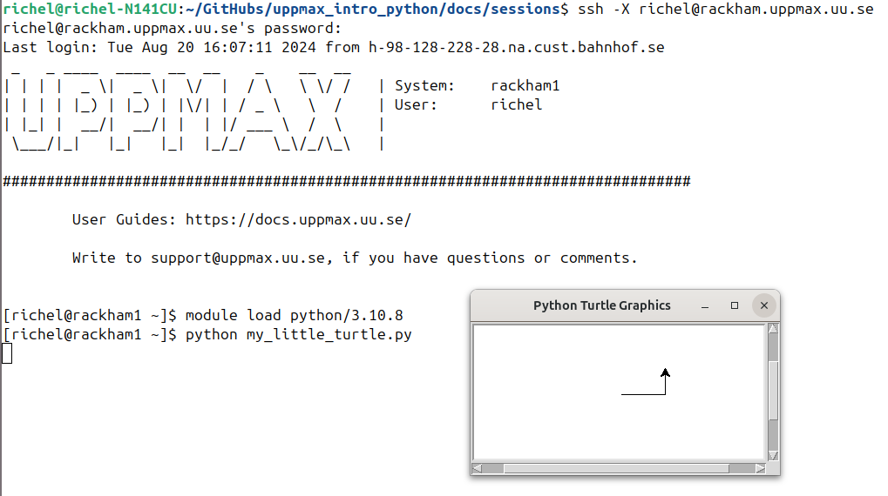

Hello, little turtles¶
Learning outcomes
- Practice using the documentation of your HPC cluster
- Practice using the Python book How to Think Like a Computer Scientist: Learning with Python 3
- Have a first 'Get stuff to work' experience
- Rehearse creating a script
- Experience when importing a Python package gives an error
- Search for a module that needs to be loaded
- Import a Python package successfully
For teachers
Teaching goals are:
- Learners have observed the error when importing a Python package without the needed module loaded
- Learners have searched through the modules of their HPC cluster
- Learners may find out that X-forwarding is important
- Learners have gotten 'stuff to work'
Other goals are:
- Verify that learners indeed have learned how to login with X-forwarding. Redirect to remote desktop environment as a solution
Lesson plan:
- 5 mins: prior knowledge
- 5 mins: presentation
- 25 mins: challenge
- 5 mins: feedback
Prior questions:
- What are features of the Python programming language?
- What are problems you may face when running someone else's Python code?
- Trick question: what is module?
- What is a module?
- Which problem do modules solve?
- What is a Python module/package?
- Which problem do Python modules/packages solve?
- What is X forwarding?
Overview¶
Sometime you need to get 'stuff to work', for example, code written by someone else. In this session, we practice this, going through the problems and errors that occur when you want to 'just want to run the stupid code'.
flowchart TD
running_a_script[[Goal: Running a script]]
load_modules[Loaded modules?]
use_x_forwarding[Use X forwarding?]
success[Success: exercise 3]
failure_1[Failure: exercise 1]
failure_2[Failure: exercise 2]
running_a_script --> load_modules
load_modules --> |yes!| use_x_forwarding
load_modules --> |oops, forgot!| failure_1
use_x_forwarding --> |oops, forgot!| failure_2
use_x_forwarding --> |yes!| successExercises¶
Exercise 1: Fail at running a first program¶
Learning outcomes
- Rehearse creating a script
- Try to import a Python package
- Observe errors when a package is absent, due to a module not being loaded
Read the following sections of How to Think Like a Computer Scientist: Learning with Python 3:
- 3.1. Our first turtle program
Then:
- Log in to Rackham using SSH without X forwarding
-
Do not load a Python module: it is the point of this exercise to see what happens if you forget to do so!
-
Copy-paste the first script in that section to a script on Rackham. Below is a copy of that script:
import turtle # Allows us to use turtles
wn = turtle.Screen() # Creates a playground for turtles
alex = turtle.Turtle() # Create a turtle, assign to alex
alex.forward(50) # Tell alex to move forward by 50 units
alex.left(90) # Tell alex to turn by 90 degrees
alex.forward(30) # Complete the second side of a rectangle
wn.mainloop() # Wait for user to close window
Do not call the script turtle.py
Do not call the script turtle.py.
Feel encouraged to do so anyways and observe the error message :-)
- Run the script on Rackham using
python3and without loading any modules. Does the error message make sense?
Why use python3 instead of python?
Because python happens to have access to the turtle
library, hence it gives the error of the next exercise
directly
Answer
Here is the error:
[richel@rackham3 ~]$ python3 my_little_turtle.py
Traceback (most recent call last):
File "my_little_turtle.py", line 1, in <module>
import turtle # Allows us to use turtles
ModuleNotFoundError: No module named 'turtle'
It does mean that the turtle package is not available.
That is correct: the python module (with many packages)
has not been loaded yet!
Exercise 2: Fail at running a first program again¶
Learning outcomes
- Rehearse creating a script
- Try to import a Python package
- Observe errors when X forwarding is not enabled
- Log in to Rackham using SSH without X forwarding
- Run the script on Rackham and verify it will not run. Does the error message make sense?
For those that use MobaXterm that cannot get an error
It seems that for some MobaXterm users, the X-forwarding is always on, so you cannot get this error.
To get the error: create a new terminal
and login via ssh without the -X :-)
Answer
This is what will happen:
Log in without X forwarding:
richel@richel-N141CU:~/GitHubs/naiss_intro_python/docs/sessions$ ssh richel@rackham.uppmax.uu.se
richel@rackham.uppmax.uu.se's password:
Output:
Last login: Fri Aug 16 09:49:42 2024 from h-98-128-228-28.na.cust.bahnhof.se
_ _ ____ ____ __ __ _ __ __
| | | | _ \| _ \| \/ | / \ \ \/ / | System: rackham2
| | | | |_) | |_) | |\/| | / _ \ \ / | User: richel
| |_| | __/| __/| | | |/ ___ \ / \ |
\___/|_| |_| |_| |_/_/ \_\/_/\_\ |
###############################################################################
User Guides: https://docs.uppmax.uu.se/
Write to support@uppmax.uu.se, if you have questions or comments.
Loading the python/3.10.8 module, which is good practice
(yet irrelevant for the error message):
Running the script:
[richel@rackham2 ~]$ python my_little_turtle.py
Traceback (most recent call last):
File "/domus/h1/richel/my_little_turtle.py", line 2, in <module>
wn = turtle.Screen() # Creates a playground for turtles
File "/sw/comp/python/3.10.8/rackham/lib/python3.10/turtle.py", line 3664, in Screen
Turtle._screen = _Screen()
File "/sw/comp/python/3.10.8/rackham/lib/python3.10/turtle.py", line 3680, in __init__
_Screen._root = self._root = _Root()
File "/sw/comp/python/3.10.8/rackham/lib/python3.10/turtle.py", line 435, in __init__
TK.Tk.__init__(self)
File "/sw/comp/python/3.10.8/rackham/lib/python3.10/tkinter/__init__.py", line 2299, in __init__
self.tk = _tkinter.create(screenName, baseName, className, interactive, wantobjects, useTk, sync, use)
_tkinter.TclError: no display name and no $DISPLAY environment variable
[richel@rackham2 ~]$
The error is no display name and no $DISPLAY environment variable.
In simpler terms, this can be read as 'Nothing to show graphics with'.
The solution is to login to Rackham with X forwarding enabled
Exercise 3: Running a first program¶
Learning outcomes
- Import a Python package
- Practice to search for a module that needs to be loaded
- Get a script that requires a module to be loaded to work
Now we try to make this script work!
Read:
Now, try to get the script to work.
When running the code, there should be a visible pop-up window. If not, re-read the UPPMAX documentation page 'Login to Rackham' and enable X-forwarding. If X-forwarding does not work, use the Rackham remote desktop environment.
Need more hints?
The exercise is about practicing to search for an UPPMAX module, hence giving away the answer makes this session useless.
However, if you feel stuck too much, you can watch a video in which this exercise is done here
- Log in to Rackham using SSH with X forwarding. How does it look?
Answer
This is how to log in with X forwarding enabled:
It looks like this:
